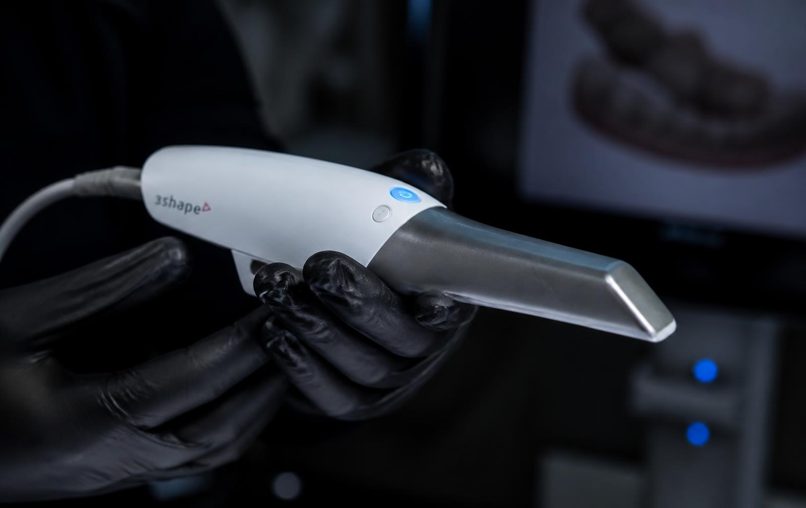

Preci-sión
La tecnología no reemplaza al criterio clínico: lo vuelve verificable. Sirve para medir, comparar y documentar lo que se hace.

Registro del caso
Imágenes y documentación clínica que permiten comparar el antes y el después con criterio objetivo.
Esterilización
Circuito de instrumental con protocolo definido para cada etapa. Estructura lista para detallar el procedimiento completo.
Equipamiento
Instrumental y equipos seleccionados según el tipo de procedimiento. El listado específico se incorpora a esta sección.
Historia clínica
Cada consulta queda asentada. El seguimiento no depende de la memoria de nadie.
Lo importante se mide.
Los datos técnicos específicos del centro —equipos, marcas y protocolos— se completan en esta sección con la información verificada.